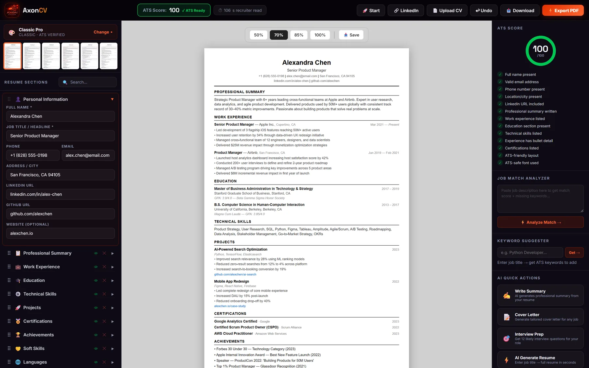
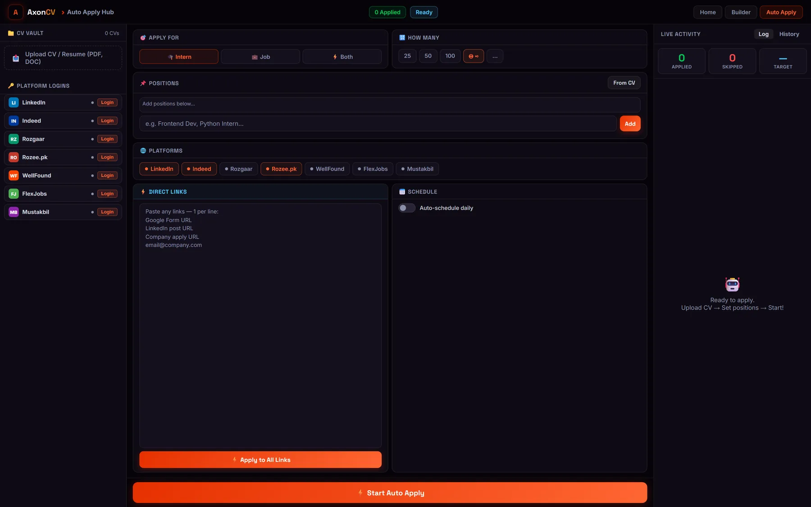
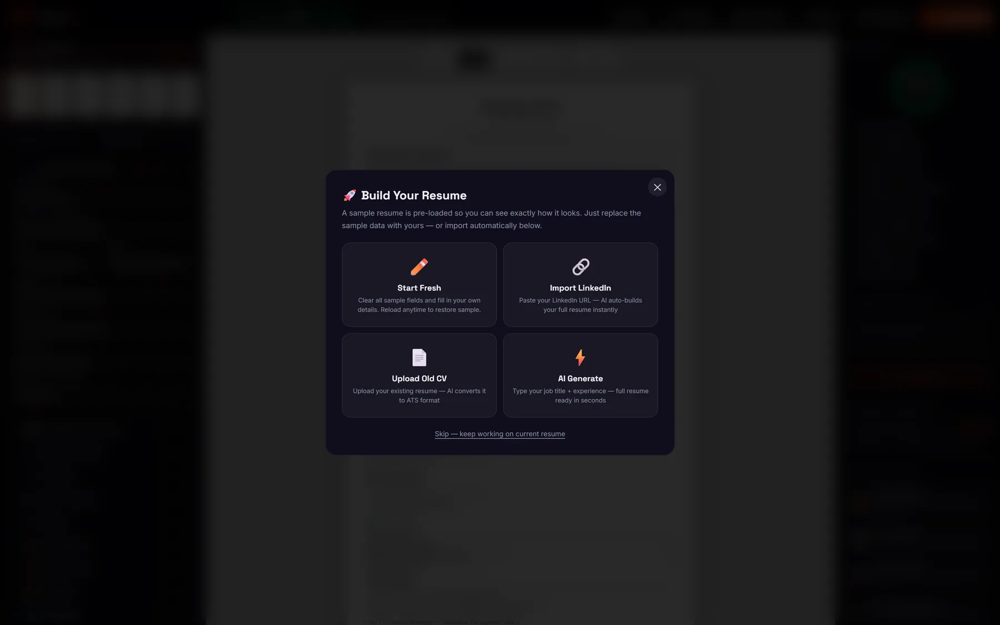
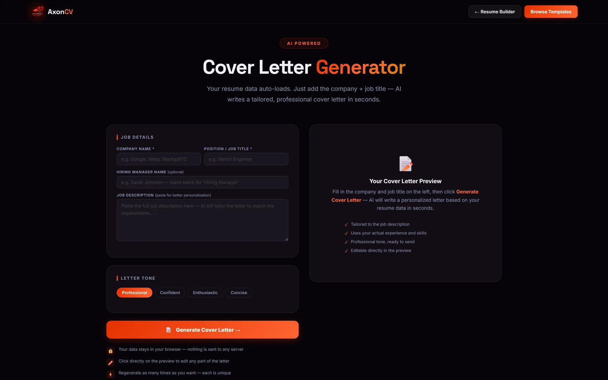
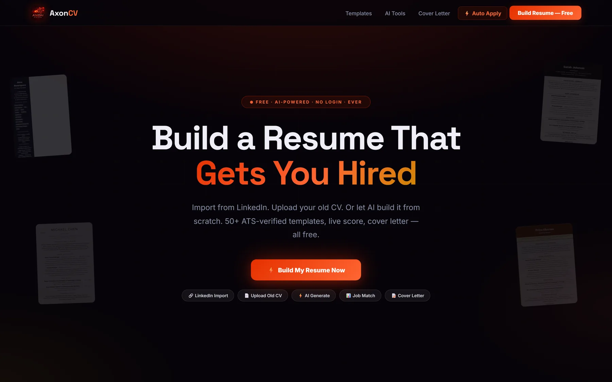

AI
AxonCV
A résumé builder that scores itself against ATS rules, and then applies for you.
A candidate sees why a résumé is being filtered out before a recruiter does, fixes it in the builder, and applies with the version that actually passes the screen.

The problem
Every résumé builder claims to be “ATS-friendly”. None of them show their working, so the claim is unfalsifiable and the applicant learns nothing.
What it does
A three-pane builder: template and drag-ordered sections on the left, a live formatted preview in the middle, and scoring on the right - an ATS score against a visible thirteen-point checklist, so every point is a thing you can see and fix.
Beyond the builder: a job match analyzer that reads a pasted job description and names the missing keywords, an AI cover letter, interview prep, and an auto-apply hub across seven job boards - three of them Pakistani.
Details
- An ATS score against a visible 13-point checklist, not a vague claim
- Job match analyzer, keyword suggester, AI cover letter and interview prep
- Auto-apply across seven job boards including Rozgaar, Rozee.pk and Mustakbil
More screens



